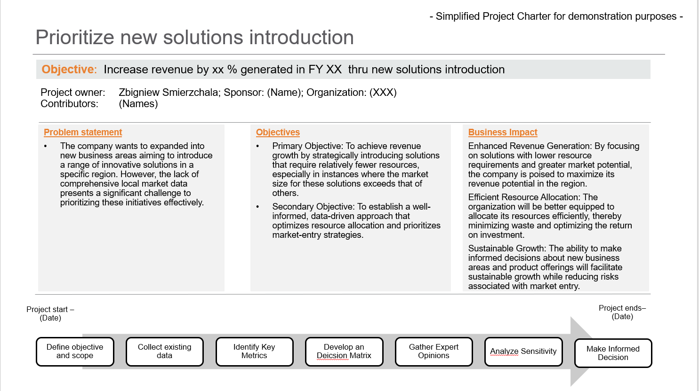
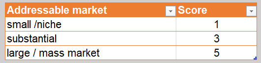
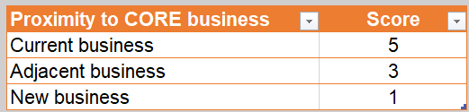

In the fast-paced world of business, companies often find themselves at a crossroads when it comes to introducing new product offerings. While data-driven decision-making is crucial for success, two common limitations frequently impede this process: a lack of sufficient data and the constraints of time
In this article, I draw upon my own experience to explore a critical challenge faced by businesses when venturing into new territories and product offerings. Over the years, I've encountered numerous instances where the scarcity of local market data has presented a formidable obstacle to making informed decisions about what to prioritize and invest in.Join me in exploring best practices for developing a simple matrix to aid in prioritizing new product offerings when faced with these challenges.
First let’s start with a Simplified Project Charter, which may look like the following:
Figure 1 Simplified Project Charter 
To illustrate how the steps outlined in the process above can be applied in a real-world scenario, let's consider a hypothetical technology company, TechSolutions Inc., that is looking to introduce a new software product. TechSolutions aims to expand its market presence and increase its revenue by offering a new software solution.
Step 1: Define Your Objectives
TechSolutions identifies its objectives: increase annual revenue by 15% and gain a 10% market share in the software sector within the next two years.
Step 2: Collect Existing Data
The company starts by analyzing historical sales data, customer feedback, and past product launches. They discover that their previous software products targeting small and medium-sized businesses have performed well.
Step 3: Identify Key Metrics
TechSolutions determines the key metrics: customer demand, profitability, resource requirements, and potential market size, with a focus on their target market segment.
Step 4: Develop a Decision Matrix
They create a decision matrix, assigning weights to each metric based on their importance. For TechSolutions, customer demand carries the most weight, given their objective of increasing market share.
Step 5: Gather Expert Opinions
TechSolutions consults industry experts, conducts focus groups with potential customers, and seeks input from their sales and marketing teams. Expert opinions help validate the potential of the new software.
Step 6: Conduct Market Research
To address data limitations, TechSolutions invests in targeted market research, surveying businesses in their target market segment to assess their software needs and preferences.
Step 7: Analyze Sensitivity
They run various scenarios, considering the impact of different levels of customer demand and resource requirements on their objectives. This helps them understand the range of possibilities.
Step 8: Use Qualitative Data
Incorporating qualitative data, TechSolutions notes that customers expressed a strong need for user-friendly features, which aligns with their product development strategy.
Step 9: Maintain Flexibility
Recognizing that the software market is dynamic, TechSolutions commits to periodically updating their decision matrix as new data becomes available and market conditions change.
Step 10: Make Informed Decisions
Finally, with a refined decision matrix in hand, TechSolutions ranks potential software offerings based on the weighted metrics and expert insights. They decide to prioritize a user-friendly, cloud-based software solution, which aligns with their objectives and the data they've gathered.
Simple matrix example
Now, let's take a practical look at how a company can decide which new solutions to introduce in a specific region, especially when they're not directly related to the company's core business. The key questions here are pretty straightforward:
- How much revenue can we make from these new solutions?
- What's the cost involved in selling, implementing, and supporting these solutions?
Now, here's the catch: We often don't have all the data we'd like, and time is usually tight. So, we need to simplify things. Instead of obsessing over the exact market size, we should focus on whether we're looking at a massive, substantial, or niche-sized opportunity.
Another factor to consider is how closely these new solutions align with our core business. The closer they are, the cheaper it is to introduce them.
As mentioned above due to data and time constraints a big simplification must be done, as in the example below.
Figure 2. Simple matrix example

Scoring system related to market opportunity
Scoring system related to costs
Author: Zbigniew Smierzchala
Conclusion
Balancing the need for data-driven decision-making with the constraints of limited data and time is a common challenge in the business world. By following these best practices and developing a simple decision matrix, you can prioritize new product offerings effectively. While data limitations may persist, your decision-making process will become more structured, transparent, and aligned with your business objectives.
Disclaimer
Opinions or points of view expressed in this article represent the personal position of the author. This document does not constitute professional advice. The information in this document has been obtained or derived from sources believed by the author to be reliable but I don’t represent that this information is accurate or complete. Any opinions or estimates contained in this document represent a judgment at this time and are subject to change without notice.